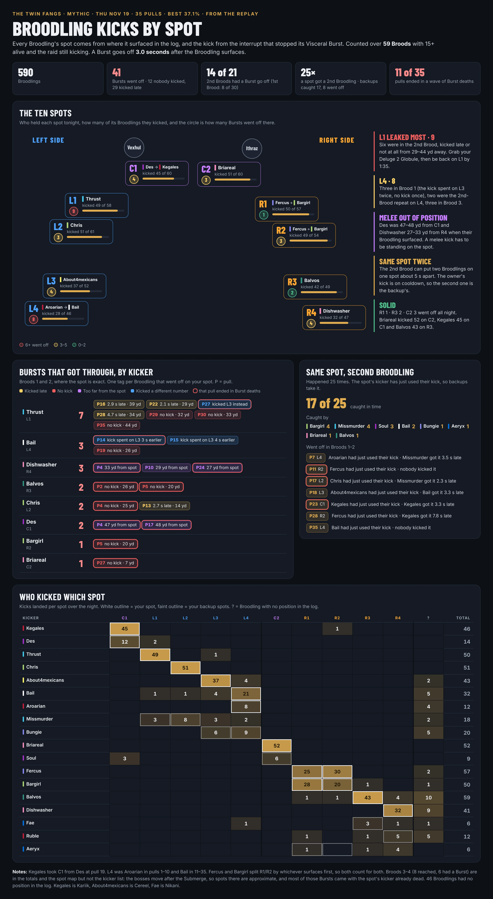
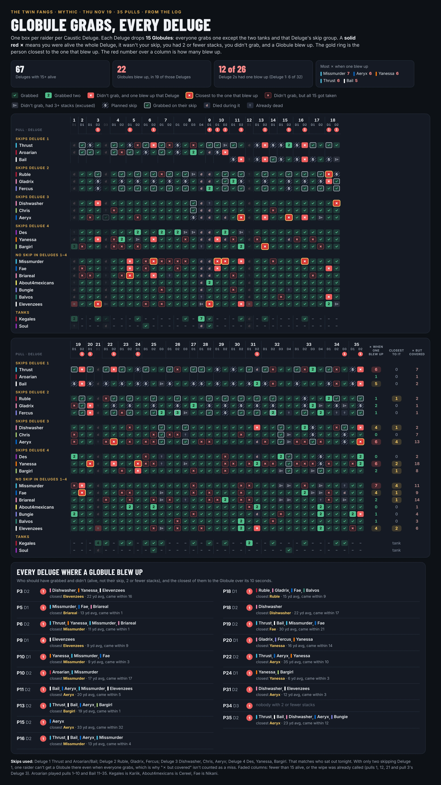

Kicks + Globules
The two things that ended most of tonight's pulls, raider by raider: every Broodling spot and who kicked it, and every raider's Globule in every Deluge of every pull. Tap an image to open it full size.
What started each wipe
- Visceral Burst: 1st Brood 4 · 2nd Brood 13 · 3rd 3 · 4th 2
- Caustic Globule: pulls 3, 6, 9, 10, 31
- Stone Breaker: pulls 15, 19, right after a Deluge 2 Globule blew up
- Ravenous Feast: pull 30
- Other: pull 8 Tainted Burst at 3:48 · pull 20 Deadly Venom at 0:38
Out of 32 pulls (pulls 1, 12 and 21 were resets in the first 25 seconds). For each pull: the first moment 3 or more people died within 6 seconds, and the first mechanic that failed just before it. The review page counts the biggest wave of deaths instead, which is why it shows Ravenous Feast 8 times: 7 of those Feasts came right after Bursts had killed the soakers.
Broodling kicks by spot
Who held each of the ten spots, every Burst that got through and why (late, no kick, too far from the spot, or the kick spent on another number), the same spot getting a second Broodling, and who kicked which spot all night.

Globule grabs, every Deluge
One box per raider per Deluge. Solid red ✗ = alive the whole Deluge, not your skip, 2 or fewer stacks, didn't grab, and a Globule blew up. Gold ring = closest to the one that blew up. At the bottom: every Deluge where one blew up and who should have had it.
